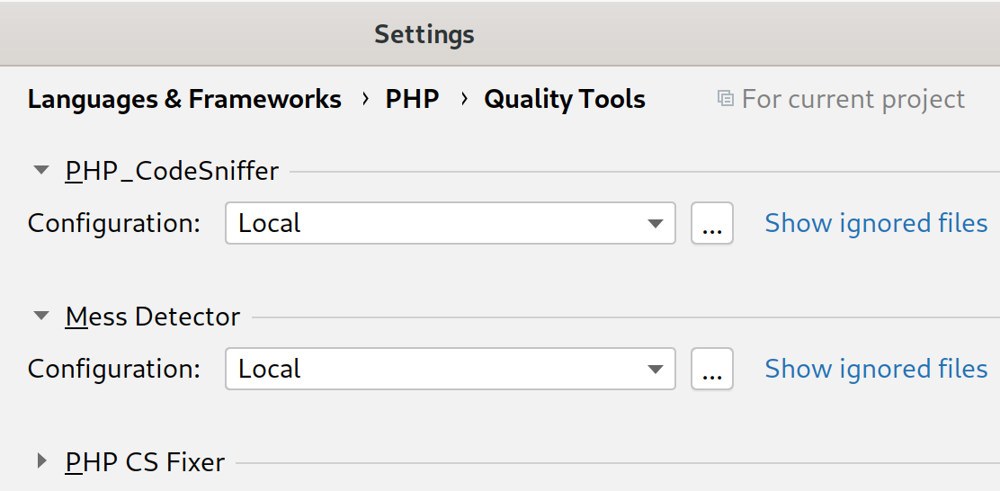
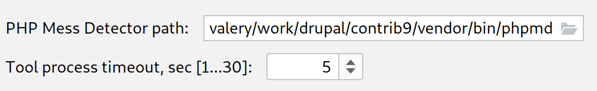
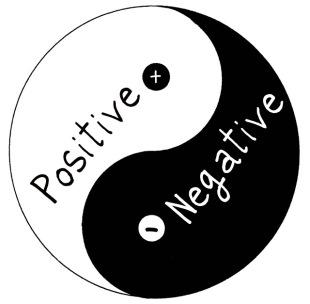

Why, when and what to test
bit.ly/dckyiv-test
Slides are hosted on github, press 's' if you want to read speaker notes too.
About myself

Valery "valthebald" Lourie
Core mentoring coordinatorAgenda
- Why do we care about quality
- What affects the quality
- Before tests
- Test types depending on project
- Quality vs budget
- Q & A
Why
- Pride
- Reputation
- Balance quality and budget
Quality KPI
- Mean time to failure
- Build stability
- Defect density
- Customer complains
- Customer satisfaction
Testing the testing
- Defect density detected by automated tests
- Phase based defect removal
- Defect removal effectiveness
- Fix backlog - BMI
- Fix response time
Cost of poor quality
- Customer support specialist costs
- Solution costs
- Brand impact costs
Static analysis
- Possible bugs
- Overcomplicated expressions
- Unused and unreachable code
Setting up PHPStorm
 Test types
- Unit
- Integration
- Functional
- Performance
- Smoke
What is web application

What is web application

What is web application


You test what you are responsible for
- (Optionally) load balancer
- Web server
- Application
- External connectors (DB, search servers, web services etc.)
What is your project?
- Core - unit
- Contrib - unit and integration
- Client project - functional
Application in detail

Functional testing tools
- PHPUnit
- Nightwatch
- Behat
- Selenium
What the client cares about?
- Overall performance
- End user experience
- Site builder experience
Behat scenarios
- Written in Gherkin - close to natural English
- Actions are methods of PHP classes
- Has a wide range of ready, reusable snippets
Smoke test: administrative permissions
As a site editor
I can use administrative pages.
As anonymous user or user without site editing permissions
I get access denied when attempting to enter administrative pages.
Behat solution:
1. Go to /admin as anonymous user
2. Check that application returns 'access denied'
3. Login as site editor
4. Check that application returns administration page
Behat feature
@javascript
Feature: Check that administrator has access to the content list
Scenario:
Given that I am a user with administrator role
And I visit page /admin/content
Then I should see `Next page` link
Given that I am user with anonymous role
And I visit page /admin/content
Then I should see `Access denied`
Client issue: new feature
As a site editor or site administrator.
When I create a new node, I can use WYSIWYG editor for body field.
I can switch WYSIWYG on and off.
Behat solution:
1. Login is site editor
2. Go to /node/add/page
3. Check that page contains WYSIWYG editor
Behat feature
Given that I am a user with administrator role
And I visit page /node/add/page
Then I should see 'View Source' button
And I click on 'View Source' button
Then I should see 'View Text' button
And I should not see 'View Source' button
Client issue: bug
News page is empty
Behat solution:
1. Go to /news as anonymous user
2. Check that there are news.
Client issue: bug
News page is empty again!
Lessons learned?
How things work
- FeatureContext class(-es)
- behat.yml
FeatureContext
class FeatureContext {
...
/**
* Push a Submit, Delete, Run etc. button.
*
* @Given I push the :button button
* @param $button
*/
public function iPushTheButton($button) {
$buttons = array(
'Submit' => 'edit-submit',
'Delete' => 'edit-delete',
Questions?
bit.ly/dckyiv-test- https://london2011.drupal.org/sites/default/files/Code%20Smells_0.pdf
- https://bscdesigner.com/quality-kpis.htm
- https://bscdesigner.com/complexity-metrics.htm
- https://diceus.com/top-7-software-quality-metrics-matter/
- https://www.atlassian.com/continuous-delivery/software-testing/types-of-software-testing
- https://docs.behat.org/en/latest/